~6 The Overlay and the Maze~
2/16/2026

The Overlay
People who create games professionally will often use a maze overlay to be able to create their mazes for the rooms. This is a process which is used especially when a maze is extremely complicated. We will take a look at creating this overlay for our room; however, we will be keeping our own maze simple.
Create the Sprite
In the Asset Browser, you want to click on the room. So, we can see the properties for the room, on the right side of the app.

On the left-hand side, get the dimensions of your room. Your rooms dimensions need to be divisible by 32px, or 64px. Because the walls will be 32px and the hero and door will be 64px.

Go to Photoshop

Create your canvas at the same size as your room.

Just find a maze (online, image search) and place it on top of your new canvas that you made in Photoshop. Turn on the 32 x32 grid to place the wall map. Just remember the hero is scaled in at 64 x 64, so your path needs to be at least two grid squares wide, in order to allow the hero to fit through the maze.
Double check your size in Photoshop for your grid size, you want it set for 32, because our wall tile pieces will look better, and fit better using this size.
Edit -Preferences- Guides, Grids & Slices…
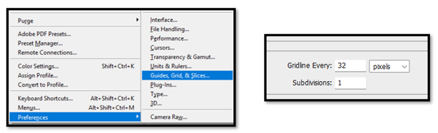Place the maze that you brought in from the web onto your Photoshop canvas. You may have to scale it to fit the directions of the room. Fit the Maze and turn down the opacity on the maze.

Start a new layer. Leave this new layer at full opacity.
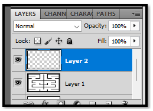Use your marquee tool to create selections for the wall.

Change your top color chip to be red

Now following (sort of) your guide start placing down a colored wall around the room. Shift – F5- Enter. This will fill your selection with the fore color of red.
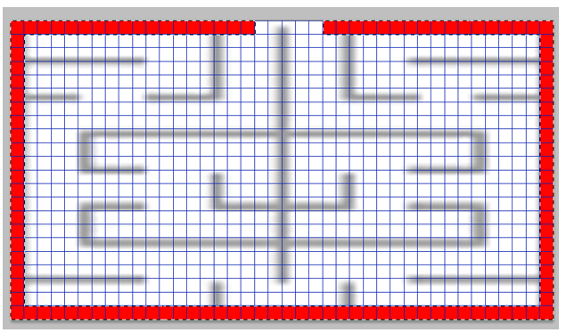
The maze being red helps it show up better on Game Makers Dark theme. You want two openings in the outer one. One is the entrance and the other is the exit. Remember we want at least a width of 2 grid squares for the hero to be able to fit through.

You may find your original grid that you brought in to copy might be a bit off. Just follow it as best as you can. Your final maze design should look something like the image below when keeping with the rules that we have set for creating our maze. Remember to turn off the underlying grid before you save our new grid.

Save Maze to your Game Maker Sprite Folder
Inside of the sprite folder, create a folder to put your mazes inside of. This will keep them organized.
Maze Overlay
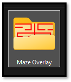
Now save your maze to this new folder inside of your sprite folder inside of Game Maker
C:\Users\Your_User_Name\GameMakerProjects\My First Game\sprites\ Maze Overlay
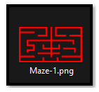We could save different mazes to our folder.
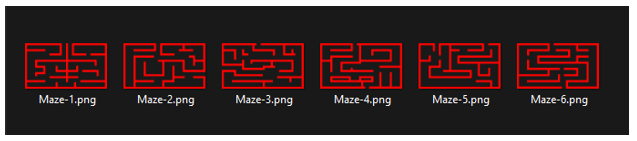
Create the Sprite for the Overlay
Create your Sprite for the overlay, by right clicking on the sprite folder inside of Asset Browser panel. Import your Maze Overlay image to represent the sprite image.

Import your maze image. Don’t worry about the size being shown in the sprite dialog box. It will change to the right size once it is brought in.

Create the Overlay Object
Now Create the overlay object, so it can be brought in on an instance layer. You know the drill. Just right click on the Object folder and create new object.
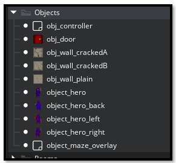
Add the sprite, we just created . Game Maker made this sprite inside of the Sprite folder. So, don’t go looking for it in the Maze Overlay folder.
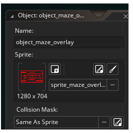Now we need to create 2 Instance layers. One will be for the maze Walls , and the other is for the Maze overlay.

Just make these Instance Layers in the same way that we have been making them.

Make sure this Maze_Overlay layer is indeed selected before dragging the maze object into the room. Also we want it positioned under the Walls layer, so the wall will go over the maze overlay.
Warning-Make sure you did not place the hero on top of the outer wall, or any wall. He will be stuck when the game starts if you did.
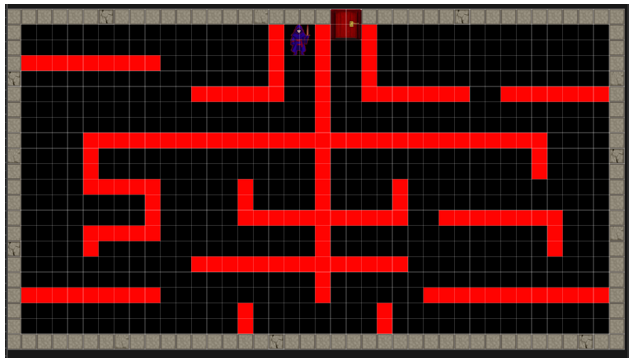To Move the hero and door.
Go to the Instance layer which they reside on. Then click on the object that you want to move.

To see the outer walls and the hero and door make sure they are at the top of the list in the layer panel. Like this.

Placing the Maze Wall Pieces
Make sure you are on the Walls layer before brining in your wall pieces.

Start bringing in your wall pieces. Drag the first wall piece in that you want to use, and then you can hold down alt and paint. But every time you start a new maze area, the first piece needs to be dragged in first. Then you can paint.

Finish painting in the Walls.Drag in your alternate wall styles and place them sporadically around the maze.

In your layer panel. Turn off the eye of the Mask, so we do not see the red mask anymore. We are done with it.
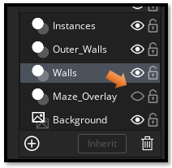
Test your maze.
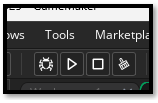If the hero is not moving through tight corridors
If you find your hero is not moving smoothly through tight corridors. Try shrinking the collision mask around him. Click on the Sprite, and set the Collision mask to manual. This way you can resize it. You will have to do this for all 4 hero sprites. You can even remove wall objects if the collision mask doesn’t work out.
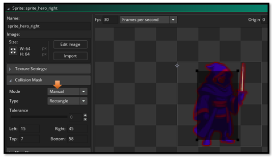Now just practice getting the hero to the door.
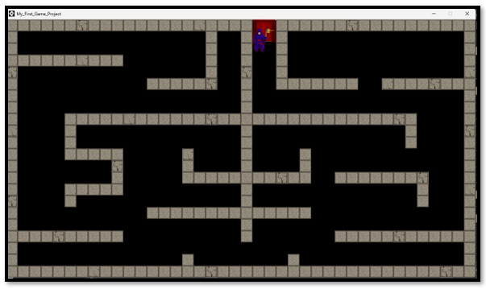
You should get a message in the terminal that you reached it.